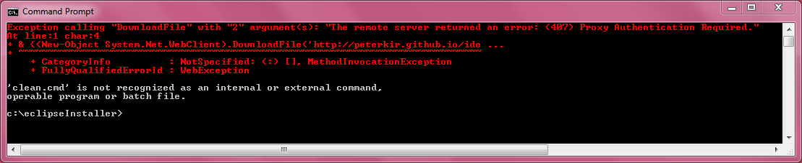

open a command window e.g. via Windows + R and cmd
Problem: Exception calling "DownloadFile" with "2" argument(s): "The remote server returned an error: (407) Proxy Authentication Required."
Solution: open InternetExplorer and goto a Internet Site (not Intranet). After site is loaded do the cmd execution again.